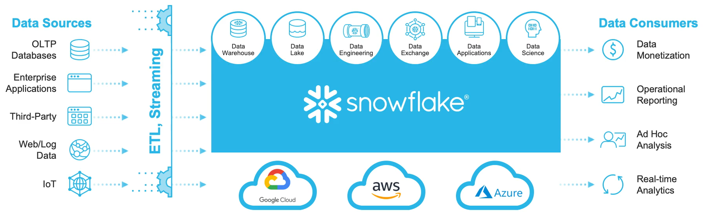
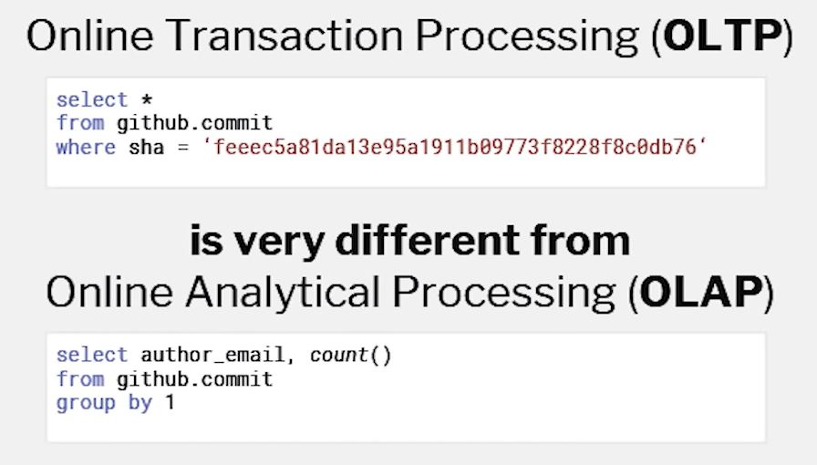
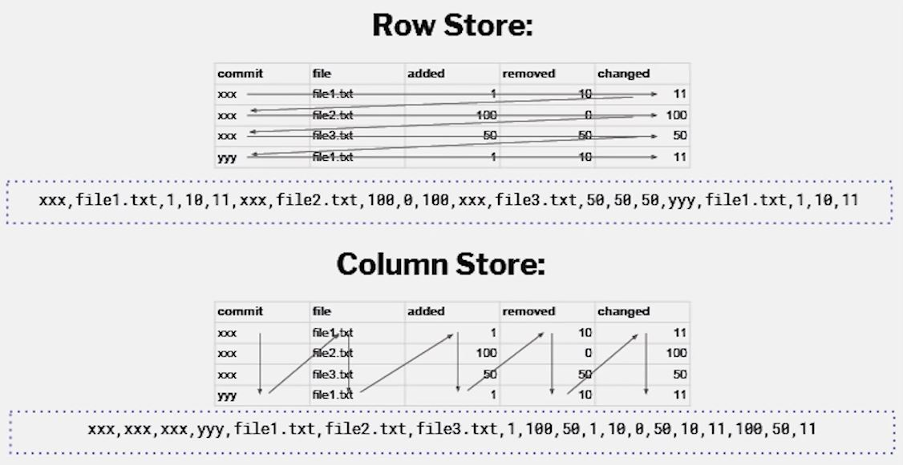
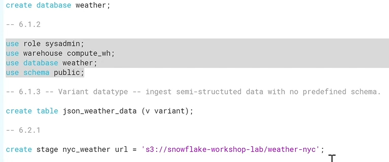
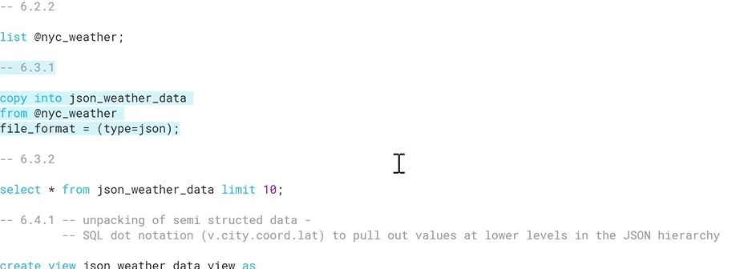
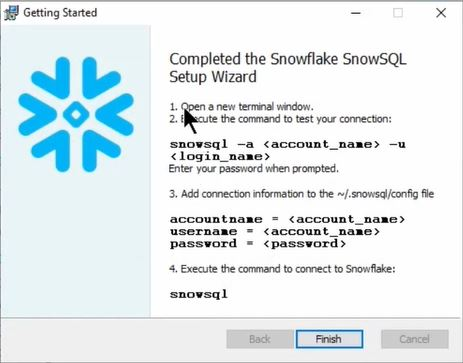

OLAP in Snowflake
Intro
Snowflake is the platform delivered as a service which means we don't have to worry about patches, upgrades or maintenance. I like the way they describe it: combines the power of data warehousing, the flexibility of big data platforms, and the elasticity of the cloud.
Navigate to Snowflake aspects:
Features
App includes following features:
Demo
Snowflake architecture
- In Snowflake's architecture, the key is a separation of storage, compute and services:
 soruce: snowflake
soruce: snowflake
- S3 as a storage layer (Google Cloud Storage or Azure Blob Storage),
- EC2 Virtual Warehouse as a compute layer .
- metadata, security, transactions and concurrency management as service layer. - Building pipelines with Snowflake:
 soruce: snowflake - Snowflake objects:
- Database - containing schemas, tables, views, stages, file formats, sequences. All the tables are created in PUBLIC schema by default.
- Stage - a data lake like place from which data files are being copied into the tables.
- File format - we need to define format of the files bieng stored at stage.
- Warehouse - computing enginge.
- Worksheet - a place where we can proceed with writing or loading ready SQL scripts.
Snowflake mechanism:
- Snowflake for OLAP:
- snowflake supports Online Analytical Processing (OLAP) for scanning all of the data in columns in order to get aggregated values as opposed to Online Transactional Processing (OLTP) where we want to retrieve one or many rows from database. The main purpose of OLAP is data analysis and when it comes to OLTP then main purpose is data processing (inserting, updating).
soruce: Data Council
- while a classic databases like PostgreSQL or MySQL are type of raw store (OLTP) that keeps data linearly row by row, from left to right, from top to bottom, Snowflake supports columnar store (OLAP) which allows to traverse entire columns one by one.
soruce: Data Council
- using columnar storage makes sense when we want to analyze one or two specific columns and skip reading other ones. - Snowflake workflow:
- Dividing big tabular data into x-consecutive rows segments called micropartitions.
- Reorganizing the data of each micropartition by flipping row store into columnar - column values of each row get stored together.
- Adding a header to each micropartition. Header contains metadata of given micropartition and columns it contains.
- Micropartitions are being stored in S3 as the immutable files.
- All the information about micropartitions are being stored in Sknowflake's metadata layer.
- When query comes in, metadata layer knows which micropartition in S3 belongs to the queried table.
- Reading a S3 file, it searches for a specific header first and then reads the only column we specified in the query.
- It reads the only queried data ingnoring the rest of S3 files. - Every action on db can be performed with sql script along with setting up stages, file formats,
configuring warehouse, copying data to a table from a stage.

 - Data Loading consists of two parts:
1. Staging the files into the place where Snowflake can retrieve data files from. We can have both internal and exteranl (S3, GSP) storages.
2. Loding the data into a specific table.
- The command line interface client for connecting to Snowflake.
- Allows to execute SQL queries to perform DDL and DML operations
- We can install it from Snowflake UI and there is info on how to connect at the end:

- Example:
USE DATABASE my_db;
CREATE OR REPLACE TABLE my_tbl {
...
};
CREATE STAGE csvfiles;
PUT file:///tmp/load/abc*.csv @csvfiles;
LIST @csvfiles;
CREATE WAREHOUSE IF NOT EXISTS "dataload" WAREHOUSE.SIZE = "Large"
AUTOSUSPEND = 300 AUTO_RESUME = TRUE;
USE WAREHUSE dataload;
COPY INTO my_tbl
FROM @csvfiles
PATTERN = '.*file0[1-4].csv.gz'
ON_ERROR = 'skip_file';
SELECT * FROM my_tbl LIMIT 10; - We can learn a lot from the documentation: Snowflake documentation
SnowPipe:
- It loads data from a sources like AWS S3 bucket into a certain target table.
- With SnowPipe we can perform whole ETL process:
CREATE PIPE my_pipe AUTO_INGEST = FALSE AS COPY INTO "MY_DB"."MY_STAGE"."tbl_my_table" (col1, col2, col3, col4, col5, col6, col7, col8) FROM ( SELECT substr(stage_alias.$3, 1, 7), iff(stage_alias.$1 = 100, replace(stage_alias, '100', 'Done'), 'In progress'), stage_alias.$2, stage_alias.$3, replace(stage_alias.$5, ',', '.'), 'Artur', metadata$filename, CURRENT_TIMESTAMP() FROM @"MY_DB"."MY_STAGE"."s3_bucket_name" stage_alias ) FILE FORMAT = (format_name = "MY_DB"."MY_STAGE"."SAP_X") FORCE = FALSE;
- at first, we create a pipe name and assign it to the COPY INTO,
- each pipe definition starts with COPY INTO then we state a destination table according to the path:
database.stage.destination table,
then we list all the destination columns that we want to feed with the data load.
- In SELECT statement, we perform entire data manipulation where each line corresponds to a signle column listed in the COPY INTO line,
- In SELECT statement, we work with indexes which refer to a column number in the data source,
- In SELECT statement, we can jump over an index if we want to avoid some columns or we can manipulate the data source columns sequence,
- In SELECT statement, we can either use source column (original or transformed) or we can give a hard-coded value there,
- For example the first line in SELECT takes 3rd column from data source and transforms it with substr(),
- Using metadata$filename gives us the name of current file's name,
- with FILE FORMAT we tell Snowflake what is the structure of the data source, what is the delimiter there etc,
- with FORCE equal to FALSE we tell Snowflake not to import the file agian if it was imported before. - AWS stage:
- in the example above we use the external stage of AWS S3,
- to create the stage we need to provide S3 bucket's url along with credentials,
CREATE OR REPLACE STAGE "MY_DB"."MY_SCHEMA"."stage_name" URL = 's3://bucket_name/folder_name' CREDENTIALS = (aws_key_id='.....' aws_secret_key='.....') ENXRYPTION = (type='AWS_SSE_KMS' kms_key_id = '......');
- encryption is being used in order to encrypt the confidential data.
- instead of passing credentials to each stage we can move on with so-called STORAGE INTEGRAION:
CREATE STORAGE INTEGRATION "MY_DB"."MY_SCHEMA"."AWS_111111_Integration" TYPE = EXTERNAL_STAGE STORAGE_PROVIDER = S3 ENABLED = TRUE STORAGE_AWS_ROLE_ARN = 'arn:aws:iam::111111:role/my_role' STORAGE_ALLOWED_LOCATIONS = ( 's3://bucket_name/', 's3://another_bucket_name/')
- which we can use in CREAT OR REPLACE STAGE script:
CREATE OR REPLACE STAGE "MY_DB"."MY_STAGE"."stage_name" URL = 's3://bucket_name/folder_name' STORAGE_INTEGRATION = "MY_DB"."MY_SCHEMA"."AWS_111111_Integration"
- ARN stands for Amazon Resource Name. - With the snowpipe we can understand what are the all dependencies and refreneces to the Snowflake objects based on the source code itself.
Time Travel:
- Every time a DML operation is executed on a table, Snowflake saves previous versions of the table data. This allows to query earlier data versions using the AT | BEFORE clause.
- The data retention period specifies the number of days for which this historical data is preserved and, therefore, Time Travel operations (SELECT, CREATE … CLONE, UNDROP) can be performed on the data. The standard retention period is 1 day (24 hours). When the retention period ends for an object, the historical data is moved into Snowflake Fail-safe (background process).
- The data retention period can be modified up to 90 days. It can be overridden using the DATA_RETENTION_TIME_IN_DAYS while creating table, schema or database.
create table mytable(col1 number, col2 date) data_retention_time_in_days=90;
alter table mytable set data_retention_time_in_days=30;
- If a retention period is specified for a database or schema, the period is inherited by default for all objects created in the database/schema. - We can query a specified point in the table’s history within the retention period giving timestamp, offset from a current date or giving statement query ID.
-- timestamp select * from my_table at(timestamp => 'Mon, 01 May 2015 16:20:00 -0700'::timestamp_tz); -- time offset from current date select * from my_table at(offset => -60*5); -- statement id select * from my_table before(statement => '8e5d0ca9-005e-44e6-b858-a8f5b37c5726');
- Querying outside the data retention period for the table, the query fails and returns an error.
Bulk Unloading
- We can use
COPY INTO location from tbl_namecommand to copy the data from the Snowflake database table into one or more files in a Snowflake or external stage. - We can also unload the data into S3 Bucket directly:
copy into 's3://bucket_name/folder_name/'
from mytable_name storage_integration = s3_int_name;
- we must specify the URI for the S3 bucket and the storage integration or credentials for accessing the bucket in the COPY command:
COPY INTO 's3://mybucket/folder_name/'
from my_table
credentials = (aws_key_id='xxxx' aws_secret_key='xxxxx' aws_token='xxxxxx') - Unloading to a File:
copy into @mystage/myfile.csv.gz from mytable file_format = (type=csv compression='gzip') single=true max_file_size=4900000000;
source: docs.snowflake.com
- loading table data to a single file named myfile.csv in a named stage.
Update statement:
- When update statement sent to a cloud database, there is no change to an existing record. Actually, a new record is being inserted with an updated value(s) instead. There is also the metadata that controlls which one of those records is the most updated. The old records are being kept in the storage and kept available so that we can go back to these if needed.
- This is unlike sql sever database for example, where update statement changes the records value in place.
Stored procedures:
- A stored procedure returns a single value only.
- Although we run SELECT inside a stored procedure, the results must be used within the stored procedure, or be narrowed to a single value and then returned.
- Language used in JavaScript that provides the control structures (branching and looping) and SQL statements are executed by calling functions in a JavaScript API.
- Example procedue that takes one variable from an user:
CREATE OR REPLACE PROCEDURE procedure_name ( project_name varchar ) RETURNS ARRAY LANGUAGE javascript AS $$ var query = "SELECT MANAGER_NAME FROM PROJECTS WHERE PROJECT_NAME = ?"; var statement = snowflake.createStatement({sqlText: query, binds: [PROJECT_NAME]}); var resultSet = statement.execute(); var arr = []; while (resultSet.next())( arr.push(resultSet.GetColumnValue(1)); ) return arr; $$; CALL procedure_name('asap_project')- When defining a stored procedure we need to declare the type of returned vlaue, here ARRAY.
- If we want to return different type depending on flow control we can declare returned value as VARIANT.
- $$ id the delimiter for the beginning and end of the stored procedure.
- With Javascript API global object's function: snowflake.createStatement() we pass JSON object with two key-value pairs.
- With binds key we bind '?' in the SELECT statement with passed variables.
- We can either bind variables with query or we can concat variables in a SELECT statment like:"SELECT MANAGER_NAME FROM PROJECTS WHERE
PROJECT_NAME = '" + PROJECT_NAME + "';"
- The variable: resultSet holds the outcome of SELECT statement.
- In order to access each row from the resultSet, we need to iterate it calling resultSet.next() one time for each record.
- As far there are records still available, resultSet.next() returns TRUE in the while loop.
- Witharr.push(resultSet)we put all record's columns into the array.
- We can narrow down the result to one column only with the following:arr.push(resultSet.GetColumnValue(1)).
- Result of above:['Artur', 'Johnny'] - IMPORTANT to note, we can pass variable names into procedrue in either upper or lower case but using these variables inside a procedure we need to use them with upper cases. This is because SQL by default converts columns in upper case.